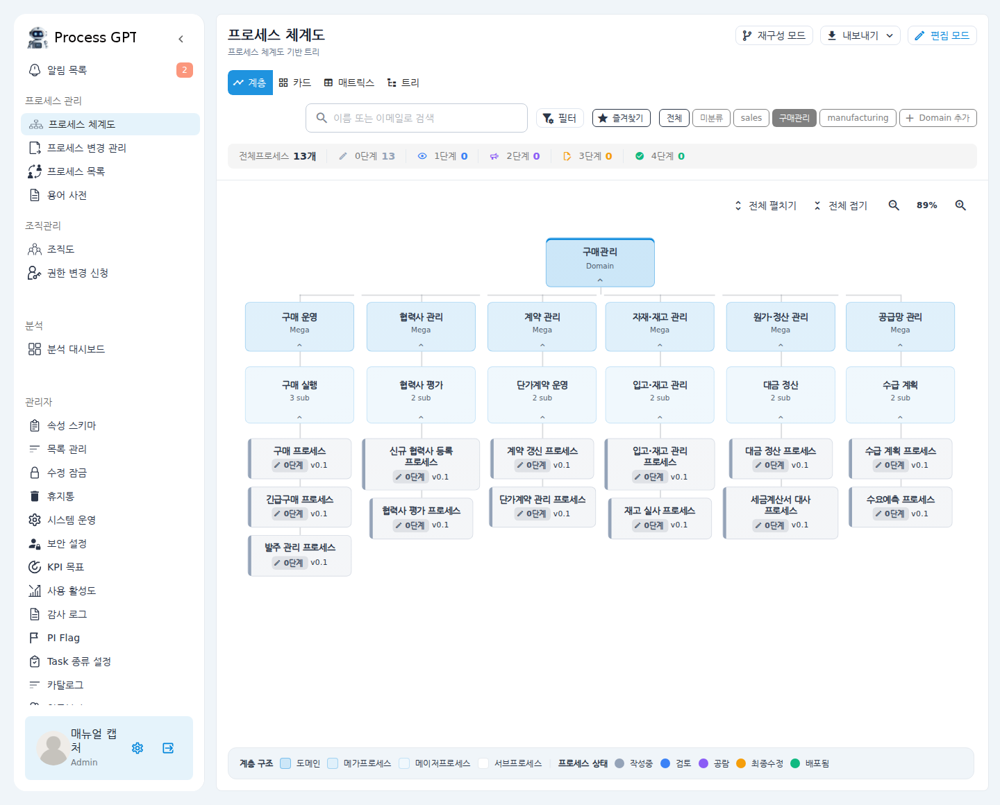
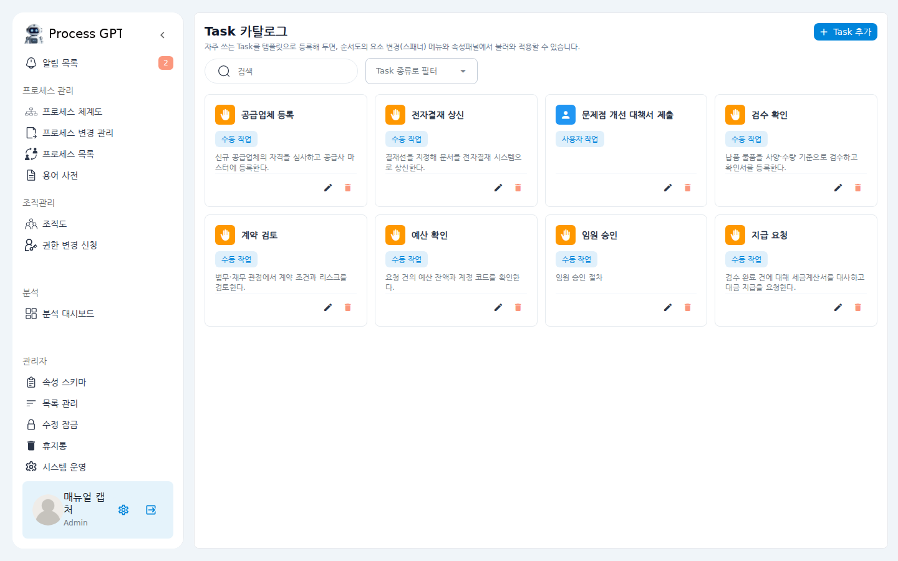
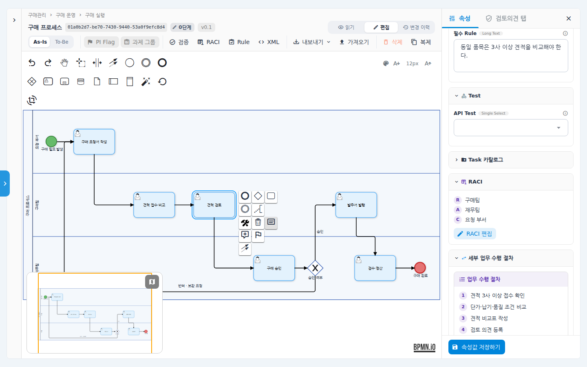
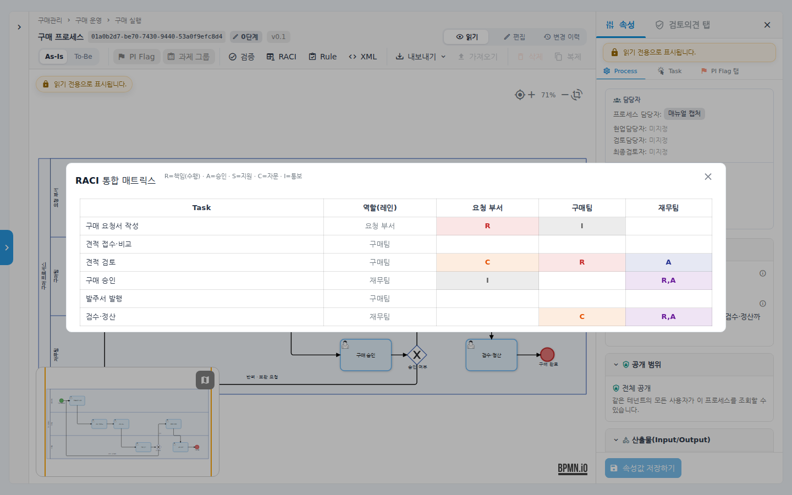
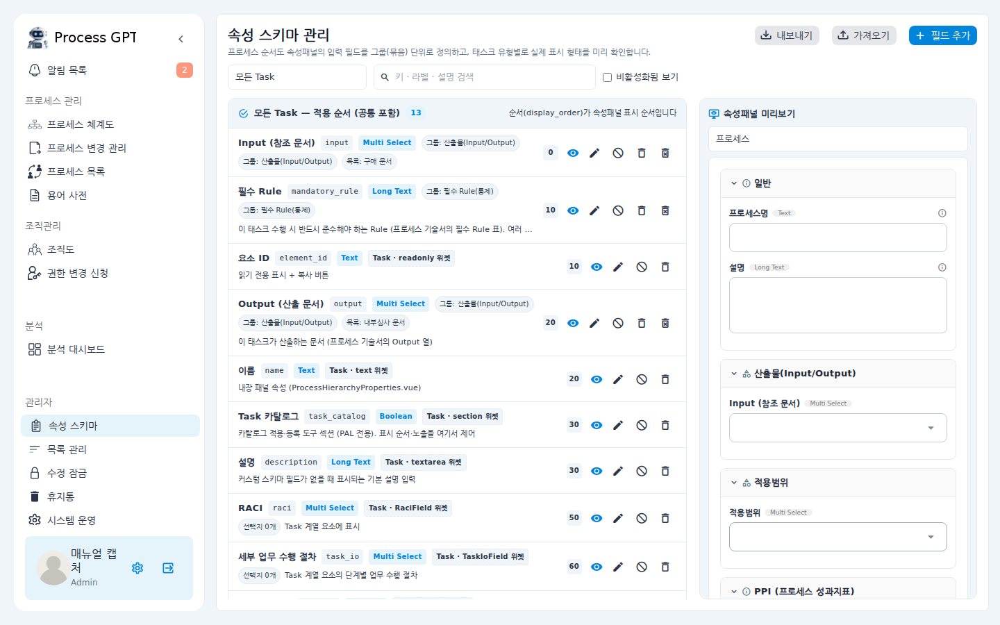
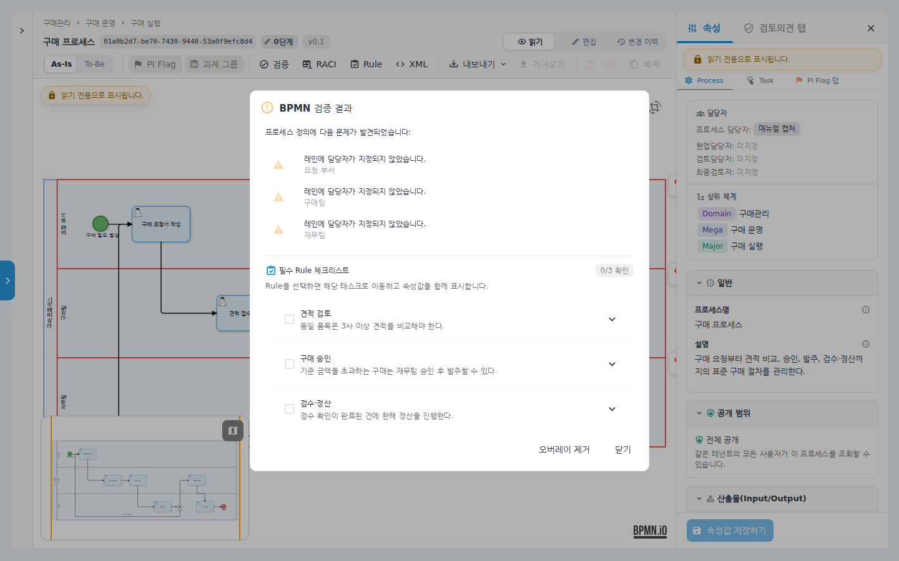
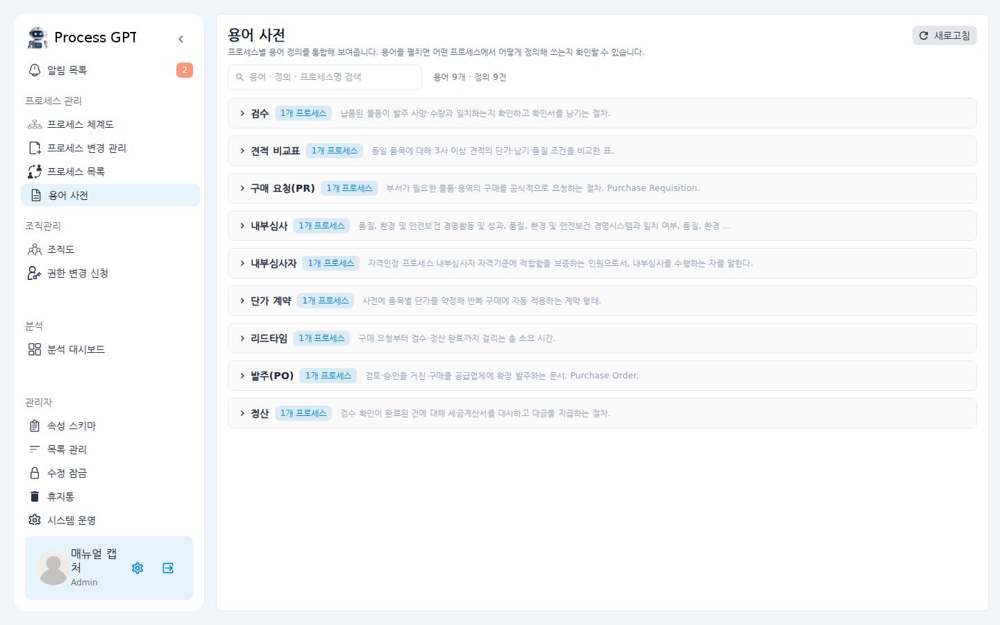
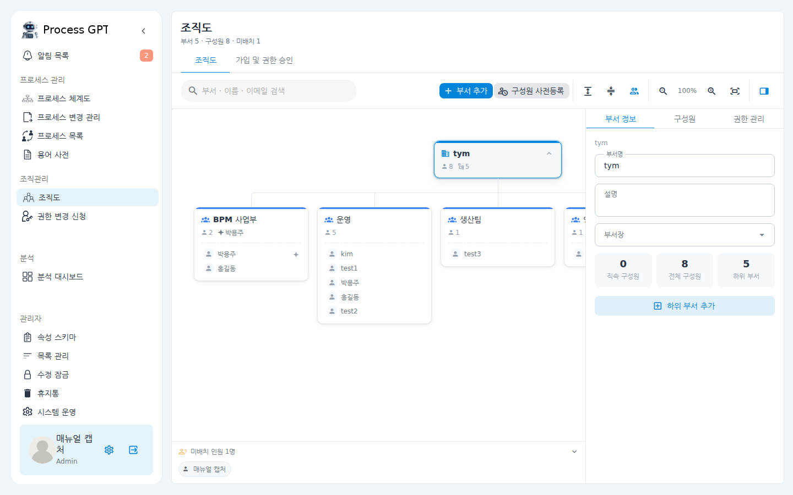
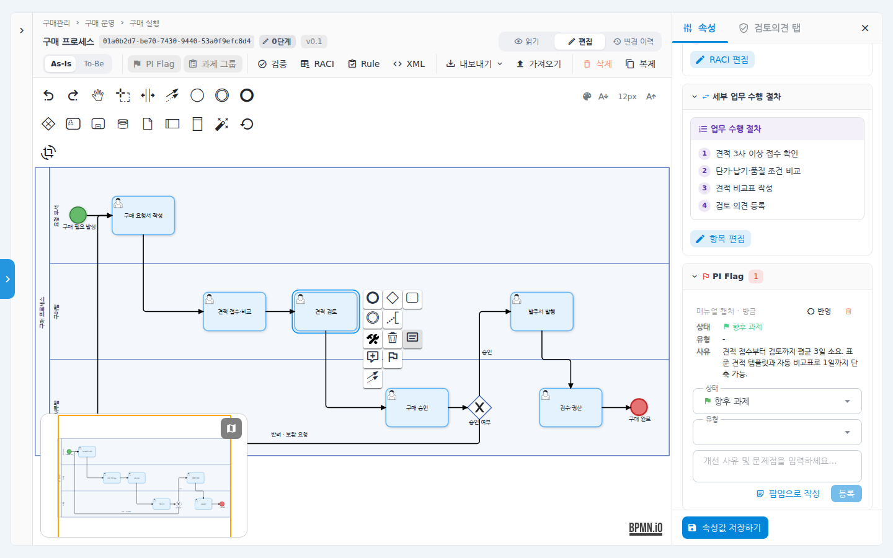

uEngine PAL - an enterprise process asset library that turns process manuals into living data.
uEngine PAL brings the enterprise processes that lie dormant in PPT and PDF files into one place and turns them into a living Process Asset Library. It governs the process hierarchy from Mega down to Sub level, RACI, approval and audit evidence, and mandatory Rules as structured, executable models and data, solving version confusion and dependence on tacit knowledge at the root. From standardization to collecting improvement ideas from the front line (PI Flag) and preparing for ISO/CMMI certification, it covers the whole journey and serves as the single source of truth for sustainable process innovation.
Why uEngine PAL
PAL manages the process hierarchy, work procedures, and approval and audit evidence as assets the whole organization shares.
Documents are scattered and no one can find the latest version
Rulebooks, SOPs and work manuals are scattered across Word and PDF files, so there is no version control and the information you need is hard to find when you need it.
Know-how is tied to people
Work procedures depend on individual experience and tacit knowledge, so continuity breaks whenever the person in charge changes.
Certification and audits demand constant proof
You need a system that continuously checks compliance with international standards such as ISO and CMMI and responds flexibly to audits.
Standards must come before automation
Before introducing RPA, BPM or AI, you need to visualize the As-Is and establish To-Be standard processes.
What sets uEngine PAL apart
The map is the navigation
The Mega → Major → Sub process hierarchy is the system's home screen. Every card carries its approval stage and version, and company-wide progress shows up in a single summary bar.
An executable model, not a drawing
From approve/reject branches to corrective-action loops, every branch of the flowchart is expressed as a BPMN 2.0 model with execution conditions.
Property data, not tables
RACI, detailed procedures, deliverables and mandatory Rules are stored as structured task properties you can query, analyze and audit.
From the second process on, you assemble
Register standard tasks such as executive approval or e-approval submission in the Task Catalog once, and reuse them in any process with every property, down to the procedure and RACI.
New templates without redeployment
The Property Schema Studio absorbs each customer's own process-description template through admin settings alone. No code changes, no redeployment.
Aligned with ISO document control
A stage 0–4 approval workflow, regression checks before merge and an append-only audit log: the control structure internal audits require is the default.
Process control and extensibility
Stage 0–4 approval workflow
Draft → review → open consultation → final edit → publish. Changes between versions are compared as field-level diffs, and dual approval by headquarters and the business unit, down to reopen requests, is tracked on one screen.
Checks before merge
Before a merge, PAL automatically checks whether a change breaks existing behavior. "This merge breaks N steps of existing behavior" — you are told right above the merge button.
Append-only audit log
Four tabs: approval history, admin audit, logins and downloads. Values before and after a change and the reason are recorded, and edits and deletions are blocked at the database level. Export to CSV and submit immediately.
Policy document impact tracking
When you register a rule or policy document, PAL automatically tracks which processes use it. It answers "what is affected if we change this rule?" instantly, and documents in use cannot be deleted.
Edit locks and maintenance mode
During closing or reorganization periods, editing is frozen per target. An edit lock is held by one person at a time, and large structural reorganizations are applied in one batch through a controlled cut-over in maintenance mode.
Org chart and membership approval
Edit the department tree by drag and drop; new members can access organizational data only after an administrator approves them. Pre-registering new hires and assigning department heads and permissions all happen on one screen.
FEATURES
From process design to operations and analytics to PI Flag improvement initiatives. Click each item to see it with real screens.
▶The process map in your documents becomes the system's home screen

▶Draw it in a few clicks, and it is an executable model the moment you do

▶Build a standard task only once


▶Every table in your process descriptions becomes living data

▶Each customer's own templates, absorbed without redeployment

▶The machine catches it; a person confirms it

▶Enter the data, and out comes the process manual

▶Report adoption results with data

▶Company-wide terms gather in one glossary

▶Diagnose the organization with a process knowledge graph

▶Every employee's improvement ideas become assetsConnect improvement ideas from the front line to the evidence for To-Be design2 screens
Mark it directly with a flag — Leave an improvement point as a flag on a single task or across several segments, and classify it as an immediate fix or a future initiative.
Accumulate as structured data — Enter the problem, improvement direction, reason and type in structured form, down to quantitative figures.
Converge into company-wide initiatives — Derive improvement initiatives across all processes on the roll-up board, and connect them to To-Be design and CSV or issue JSON exports.
"Improvement ideas from the front line come back as the evidence for To-Be design."


▶How it differs from document-based management
| Item | Document-based process management | uEngine PAL |
|---|---|---|
| Process map | PPT slides — aging out of step with the systems | The system's home screen — approval stage and version on every card |
| Workflow diagrams | Drawings — branch conditions exist only as descriptive text | BPMN 2.0 models with execution conditions — down to loops and branches |
| RACI · procedures | Tables inside documents — impossible to search or analyze | Structured property data — cell-level editing in the integrated matrix |
| Standard tasks | Copied and pasted into every process | Task Catalog — reused with every property, down to procedure and RACI |
| Template changes | An SI development job — a quote and a deployment schedule | Property Schema Studio — admin settings, zero deployments |
| Revision process | Back-and-forth email and approval attachments | Stage 0–4 approval workflow + field-level diffs + checks before merge |
| Audit evidence | Weeks of manual collection before every audit | Submitted instantly as CSV from the append-only audit log |
| Producing process manuals | System and documents written separately | PDF definitions generated automatically — enter the data and out comes the manual |
Benefits
Process standardization and visualization
Complex work procedures are visualized as a hierarchy in international standard notation, so anyone can understand them intuitively.
A single source of truth
Procedures, forms and related rules are consolidated into one central library, preventing version errors.
Faster onboarding
Registered standard process manuals shorten handovers and maintain quality even when people change roles.
Continuous process improvement
Regular monitoring identifies bottlenecks and improvement points, keeping organizational maturity continuously up to date.
PI Flag structures improvement ideas from the front line and creates a continuous improvement cycle that leads into company-wide initiatives and To-Be design.
Explore PI Flag improvement initiativesBring us one process manual. It comes back as an asset.
We'll prepare a PAL demo using your own process descriptions. From registration to validation to audit evidence — exactly as you saw today.